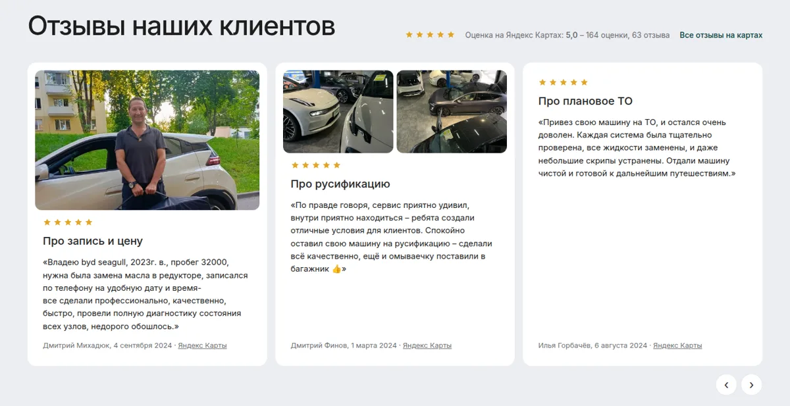
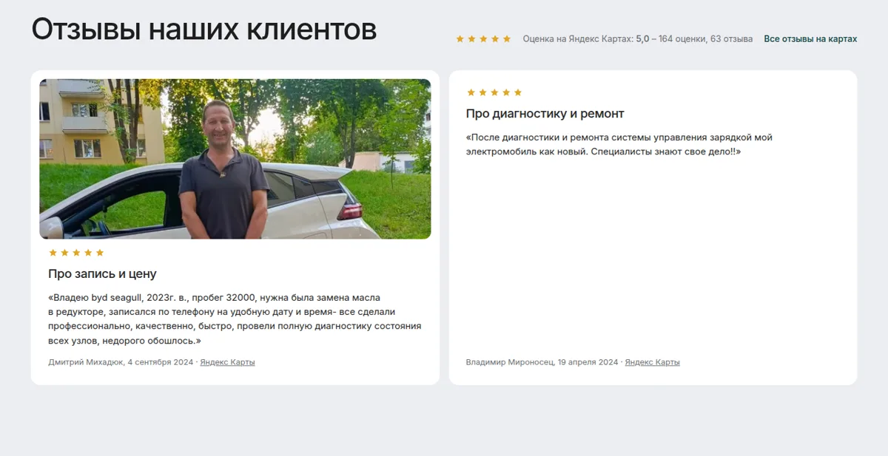

Отчёты · Evolution Car Service · 20 ноября 2026
Отзывы оформлены как на главной: звёзды, заголовок, текст, имя, дата и ссылка на Яндекс Карты. Раскладка зависит от числа отзывов, отзывы с фото идут первыми.
| Отзывов на странице | Как показано | Страниц |
|---|---|---|
| 0–1 | блок убран | 104 |
| 2 | 2 колонки | 102 |
| 3 | 3 колонки | 53 |
| 4–10 | слайдер со стрелками | 1 (главная) |
На телефоне отзывы всегда листаются вбок со счётчиком. Больше 10 отзывов на страницу не ставится.


На фото Финова зал бело-синий, а не кирпичный. Похоже, это адрес 4-й пер. Монтажников, 13, к которому привязана карточка с отзывами. Если это старое место и такие фото не нужны, скажите: уберу фото или весь отзыв.